1物件の基本情報を登録する
物件管理 ＞ 物件情報 ＞ 物件名の「詳細を見る」 ＞ 基本情報（ページ上部）
物件名・所在地・チェックイン時間など、その施設の"顔"になる情報です。物件名は日本語／英語／中国語／韓国語の4言語をタブで切り替えて個別に登録できます。
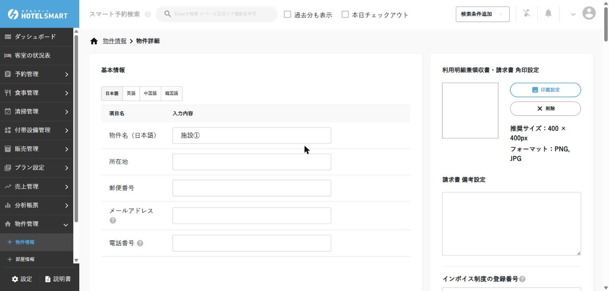
- 【物件管理】＞【物件情報】の一覧から対象の物件名にある「詳細を見る」を押し、物件詳細ページを開きます。
- 基本情報の言語タブ（日本語／英語／中国語／韓国語）を切り替えながら、物件名・所在地・郵便番号を入力します。
- メールアドレス・電話番号を入力します（お客様からの問い合わせ先として利用されます）。公式マニュアルでは、このメールアドレスはスタッフへの通知の届け先と、お客様へのメールの返信先になるとされています（送信元は別のアドレス）。変えると通知の届け先も変わります（公式マニュアルより）。
- 外観写真を「設定する」から登録します（推奨サイズはヘルプアイコンで確認できます。公式マニュアルでは1280×800px）。
- アクセスマップの表示方法（表示しない／所在地から指定／緯度経度を指定）を選びます。
- チェックイン・チェックアウトの標準時刻と、アーリーチェックイン等の可否を設定します。
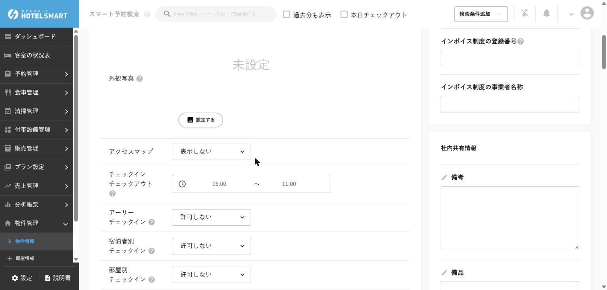
| 物件名／所在地／郵便番号 | 4言語（日本語・英語・中国語・韓国語。タブレット／マイページ表示にも反映）でそれぞれ登録。公式マニュアルでは、所在地はマイページの施設情報に、郵便番号は利用明細・領収書／請求書に出るとされています |
|---|---|
| メールアドレス・電話番号 | お客様への案内文などに差し込みキーワードとして利用可能。公式マニュアルより：メールアドレスはスタッフへの通知の届け先と、お客様へのメールの返信先になる（ここを変えると通知の届け先も変わる）。電話番号はマイページの施設情報に連絡先として出る |
| 外観写真 | 推奨サイズはヘルプ（?）アイコンで確認。未設定の場合は「未設定」と表示される。公式マニュアルでは推奨1280×800px、マイページの施設情報に出るとされています |
| アクセスマップ | 表示しない／所在地から自動指定／緯度経度を直接指定、の3パターン |
| チェックイン／チェックアウト | 時刻をプルダウンまたは直接入力。公式マニュアルより：手で予約を作るときの初期値になる。サイトコントローラーから取り込んだ予約に時刻が無いときも、この時刻が入る |
| アーリーチェックイン／宿泊者別チェックイン／部屋別チェックイン | それぞれ「許可しない／許可する」を個別に設定。公式マニュアルによる意味は次のとおりです（あらきホテルでは未確認）。
|
| 未部屋割り通過 | 部屋が未割当のままチェックインを進めることを許可するかどうか。公式マニュアルより：許可しても、タブレットだけではチェックインを完了できず、最後にフロントへの案内が出る（有人フロント向け） |
| 自動チェックアウト設定 | チェックアウト予定時刻から1〜12時間後まで、自動的にステータスをチェックアウト済みにする時間を選択（「自動処理を行わない」も選択可） |
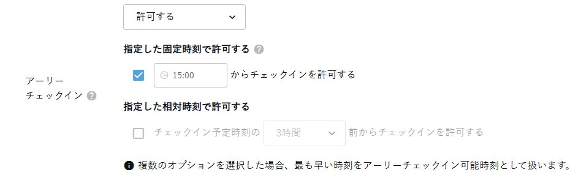
2部屋タイプ・部屋・階層を登録する
物件管理 ＞ 物件情報 ＞ 詳細を見る ＞ 部屋タイプ／階層セクション（部屋の追加は同じ物件詳細ページ下部の「部屋を追加する」）
「シングル」「ダブル」のような部屋タイプの器を先に作り、その後に物件詳細ページから実際の部屋番号を追加し、階層情報を紐づけます。
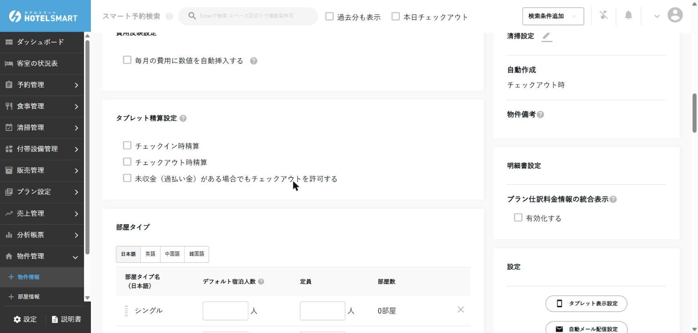
- 物件詳細ページの「部屋タイプ」欄で、4言語タブを切り替えながら部屋タイプ名を入力します。公式マニュアルでは、4言語すべての欄に入れないと保存できないとされています。部屋タイプ名は今のところ管理画面にしか出ないので、4つとも同じ日本語名でかまいません（公式マニュアルより）。
- 各部屋タイプの「デフォルト宿泊人数」と「定員」を入力します。公式マニュアルでは、自動部屋割りで定員オーバーを判定するのは、部屋ごとの定員（部屋情報 ＞ 詳細を見る）とされています。部屋タイプ欄の定員が何に使われるかは、実画面で要確認です（あらきホテルでは未確認）。
- 「＋部屋タイプを追加する」でタイプを追加、不要な行は右の「×」で削除します。
- 「階層」欄で「＋階層を追加する」から建物のフロア情報（階層名）を登録すると、部屋ごとに階層を割り当てられるようになります。各部屋への割り当ては、部屋情報の詳細の「階数」で選びます（公式マニュアルより。用途はシーン3のヒント）。
- 個々の部屋番号は、物件詳細ページ下部の「部屋を追加する」から登録します。【物件管理】＞【部屋情報】は、登録済みの部屋を一覧・絞り込みで確認する画面です。
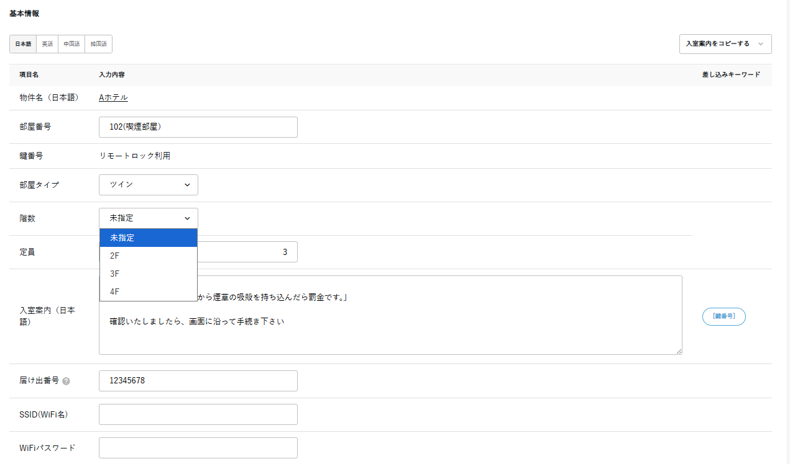
| 部屋番号 | 部屋番号または部屋名 |
|---|---|
| 部屋タイプ | プルダウンで選びます。自動部屋割りはこの部屋タイプを元に行われます。部屋タイプを変えると、物件詳細の部屋タイプごとの部屋数も変わります |
| 定員 | 子供を含む人数。空でも保存できますが、定員を超える予約は自動部屋割りの対象から外れます |
| 階数 | 物件詳細の「階層」で作ったフロアから選びます。あらきホテルでは未設定です（2026/10/09確認、シーン3のヒント参照） |
| 鍵番号／入室案内 | チェックイン完了画面やメールで案内できる鍵番号と、言語別の入室案内文（差し込みキーワード［鍵番号］が使えます）。あらきホテルでの使い方は未確認 |
| ブロック設定 | 故障・修繕などで販売を止めるときに使います（客室をブロックする） |
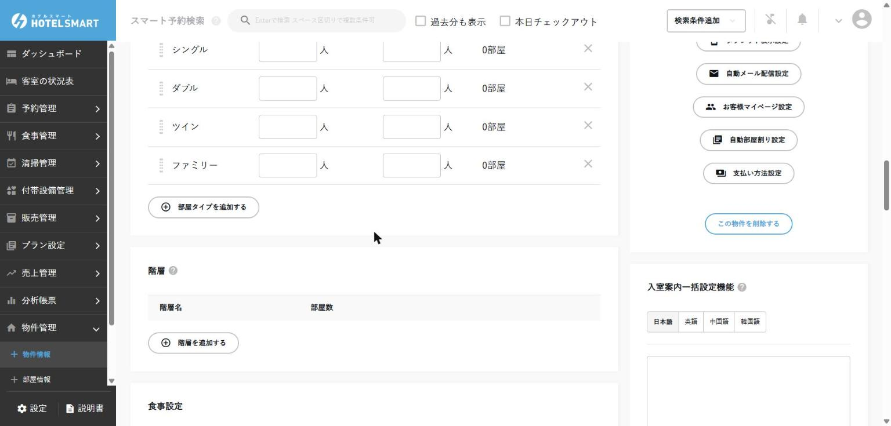
3客室の状況表のレイアウト
客室の状況表 ＞ 画面右下「レイアウト変更」
客室の状況表で全部屋の状態を一目で見られるよう、部屋を建物の階ごとに並べます。新しく登録した部屋は「未配置の部屋」に横一列で並ぶだけなので、登録後に必ず配置します。
| 行 | 内容 | 部屋 |
|---|---|---|
| 1 | 5階 | 501、502（2室） |
| 2 | 4階 | 401〜420（20室） |
| 3 | 3階 | 301〜320（20室） |
| 4 | 2階 | 201〜209、260〜263（コンドミニアム）（13室） |
| 5 | キャビン | 1〜24（24室） |
| 6 | カプセル | CP1〜CP20（20室） |
| 7 | 赤尾木荘 | 赤1〜赤6（6室） |
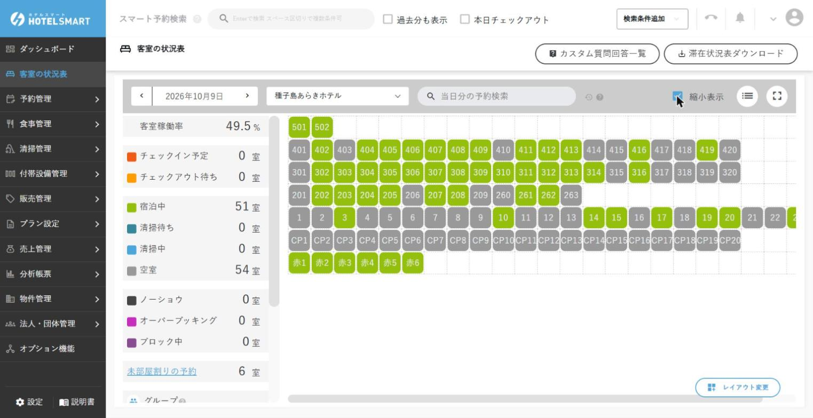
- 上の行から5階→2階の降順、その下にキャビン・カプセル・赤尾木荘の順に並べます。各行の中は部屋番号の小さい順に左から並べます。
- この配置で全105室を設定済み（未配置の部屋は0室、2026/10/09確認）。
- 別館（4室）は別の物件として、それぞれの客室の状況表で配置します。
- 客室の状況表を開き、物件で「種子島あらきホテル」を選びます。
- 画面右下の「レイアウト変更」を押します。「部屋の配置を変更しますか？」と確認が出るので OK を押すと、編集モードになります（配置枠の上下左右に⊕ボタンが表示されます）。
- 「未配置の部屋」から部屋をドラッグ＆ドロップして、配置ルールの位置に置きます。マス（行・列）が足りないときは、配置枠の上下左右の⊕ボタンで追加します。
- 配置が終わったら、もう一度「レイアウト変更」を押します。「配置変更を保存しますか？」と確認が出るので OK を押すと保存されます。
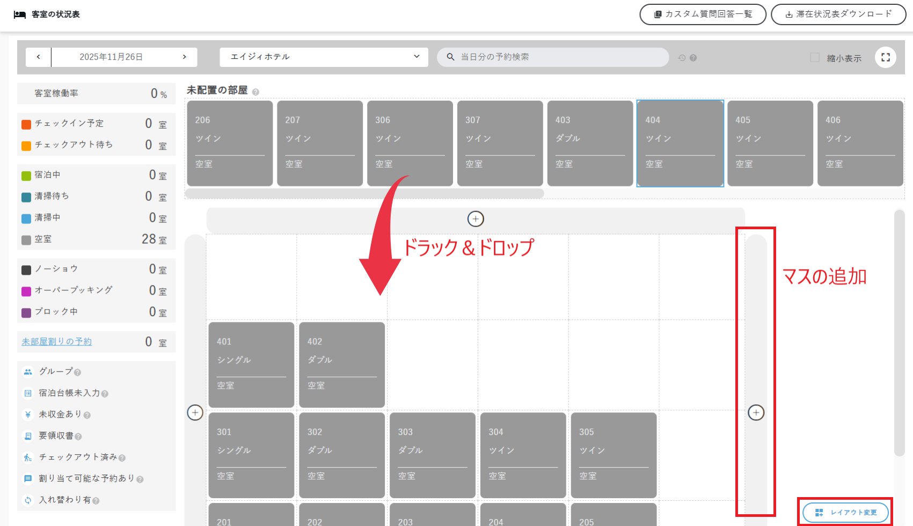
- 「レイアウト変更」を押さずにほかの画面へ移ると、配置は保存されません。
- 保存すると、部屋が置かれていない端の行・列は自動で削られます。
- 部屋を新しく登録したときは「未配置の部屋」に表示されるので、配置ルールに従って同じ手順で配置します。
- 部屋数が多く画面に収まらない行（キャビン24室など）は横スクロールで表示されます。全体を見たいときは、画面上部の「縮小表示」や全画面表示を使います。
公式マニュアルでは、階数は「フロア一括割当」（新しい予約を作るときに、選んだフロアの全室をまとめて確保する機能。修学旅行などの団体向け）に使うとされています（実画面は未確認）。団体を受けるなら設定を検討します（フロア一括割当）。部屋割り表の「フロア」絞り込みに効くかどうかは公式マニュアルに記載がなく、引き続き実画面で要確認です。
4お食事メニュー（食事項目）を設定する
物件管理 ＞ 物件情報 ＞ 詳細を見る ＞ 食事設定／食事項目セクション
朝食・夕食などお食事の提供がある施設向けの設定です。予約時にプランへ自動反映させたり、食事場所・提供時間を管理できます。
| 朝食料金計上日 | 「提供日」または「前日」を選択。売上帳票の集計日に影響します |
|---|---|
| 食事項目 | 「＋食事項目を追加する」から、食事項目名／カテゴリー／料金科目／単価／食事場所／提供時間を個別に登録 |
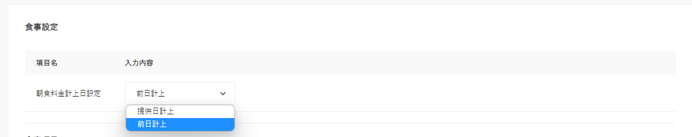
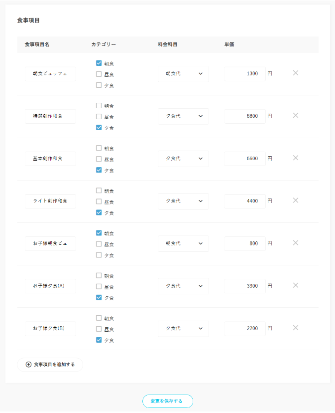
将来使うときの注意：公式マニュアルでは、予約に手で食事を付けても、その料金は料金情報に自動では入らない（手で追加する）とされています。
5予約画面の表示項目を選ぶ（予約詳細表示設定）
物件管理 ＞ 物件情報 ＞ 詳細を見る ＞ 予約詳細表示設定セクション
予約作成・予約詳細画面に表示する項目の「表示する／表示しない」を、施設の運用に合わせて絞り込めます。使わない項目を非表示にすると、フロント業務中の画面がすっきりします。
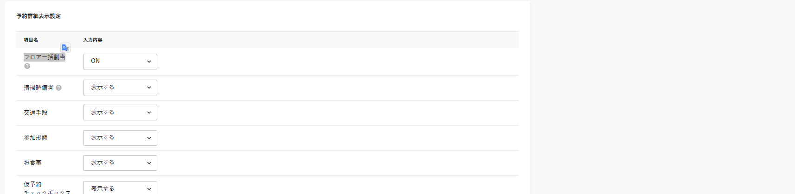
| フロア一括割当 | ON／OFF。公式マニュアルでは表の先頭にある項目で、ONにすると新規予約の画面で1フロアの全室をまとめて割り当てられます（団体向け。フロア一括割当）。あらきホテルの設定値は未確認 |
|---|---|
| 清掃時備考 | 予約に紐づく清掃時の特記事項欄 |
| 交通手段／参加形態 | お客様の来訪手段や団体内での参加区分 |
| お食事 | 予約情報欄の食事選択UI。公式マニュアルでは、表示すると食事管理が使えるようになるとされています |
| 仮予約チェックボックス | 正式確定前の予約であることを示すフラグ |
| 付帯設備予約 | 会議室・駐車場などの付帯設備の予約欄。公式マニュアルでは、表示すると付帯設備管理が使えるようになるとされています |
| 費用情報／請求書 | 精算・請求書関連情報の表示有無 |
6部屋割り表の初期設定
物件管理 ＞ 物件情報 ＞ 詳細を見る ＞ 部屋割り表設定セクション
【予約管理】＞【部屋割り表】画面を開いたときの初期表示を決める設定です。
| 絞り込みモード初期値 | ON／OFFを選択。ONにすると部屋割り表を開いた際、条件絞り込みパネルが最初から開いた状態になります |
|---|
7付帯設備・手配品を登録する
物件管理 ＞ 物件情報 ＞ 詳細を見る ＞ 付帯設備／手配品セクション
会議室・駐車場・レンタサイクルなど「設備」の予約枠と、アメニティやレンタル品といった「手配品」を、それぞれ個別に登録します。
| 付帯設備 | 「＋付帯施設を追加する」から設備名・定員数を登録。時間軸で利用状況を管理する【付帯設備管理】＞【設備利用状況】画面で使われます。使うには、予約詳細表示設定で「付帯設備予約」を「表示する」にします（公式マニュアルより）。ボタン名は公式マニュアルでは「付帯設備を追加する」です（実画面の表記は要確認） |
|---|---|
| 手配品 | 「＋手配品を追加する」から手配品名・表示順・デフォルト数量・有効/無効を登録。予約管理＞手配品一覧に反映されます。一度でも予約で使った手配品は削除できないので、使わなくなったら「有効」のチェックを外します（公式マニュアルより） |
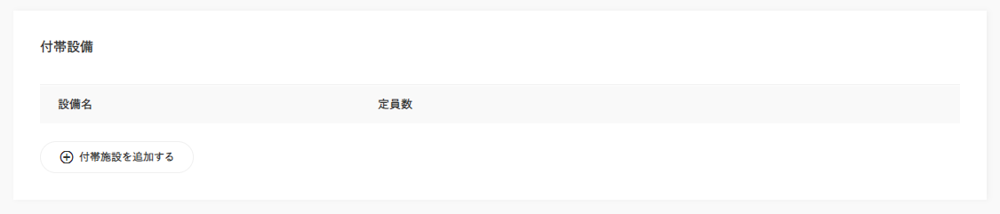
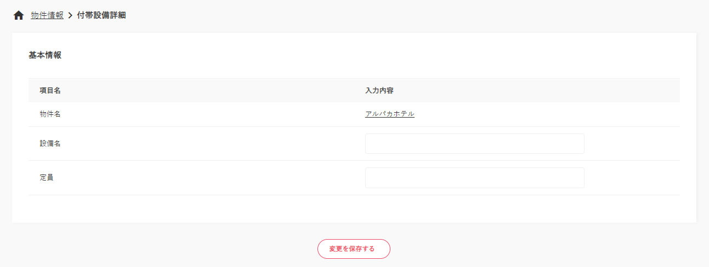
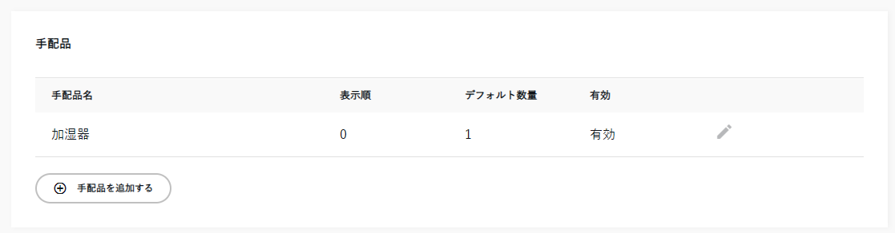
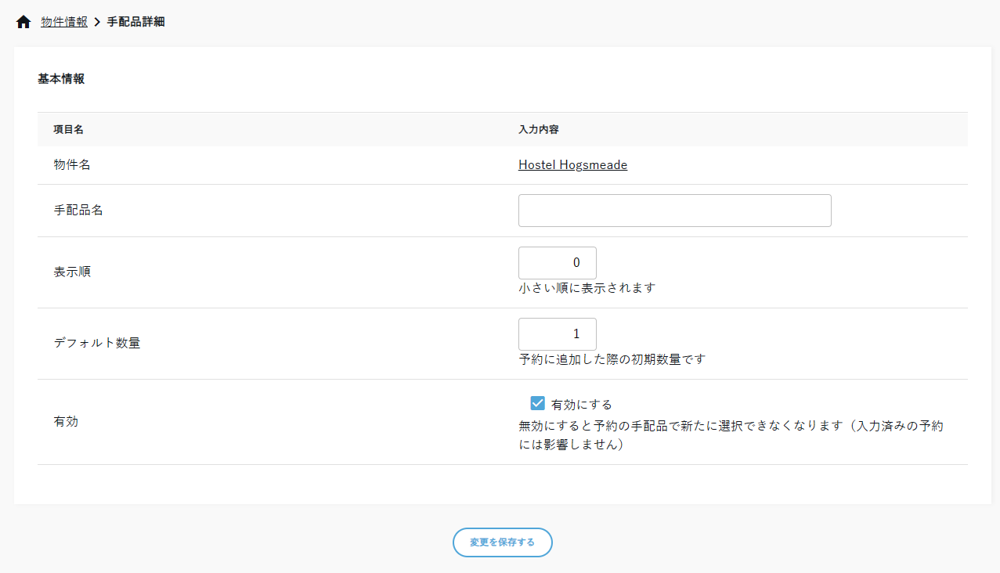
公式マニュアルより：表示順は0以上、デフォルト数量は1以上の整数で入れます（合わないと保存できません）。「有効」のチェックを外しても、すでに予約に入れた手配品はそのまま残ります。
- 付帯設備：予約詳細の〖付帯設備予約〗で、設備・利用期間・人数を入れて使います。人数が定員を超えたときや、ほかの予約と時間が重なったとき（オーバーブッキング）は警告が出ます。設備の料金は自動では入らないので、料金情報に別に登録します。利用状況は【付帯設備管理】＞【設備利用状況】で時間軸で見られます。
- 付帯設備だけの予約：部屋を使わない予約は「0部屋の予約にする」で登録すると、稼働率などに影響しません。この予約があると日次締めで「未チェックインの予約があります」と出ますが、そのまま締めてかまわないとされています。
- 手配品：予約詳細の〖手配品情報〗で部屋・手配日・数量を指定し、【予約管理】＞【手配品一覧】で日ごとにまとめて確認します。ルームチェンジや日程移動をすると、手配品も一緒に移ります。
- 予約側での操作はフロント運用編を参照してください。
8通知設定（誰に何を知らせるか）
物件管理 ＞ 物件情報 ＞ 詳細を見る ＞ 通知設定セクション（右カラム）
スタッフ向けの社内通知です。お客様への自動メールとは別物なので混同しないよう注意してください。
| 予約関係の警告 | 重複予約やエラーなど、予約データに関する警告 |
|---|---|
| 予約情報の更新 | 予約内容が変更されたときの通知 |
| お客様操作 | お客様がマイページ等で行った操作の通知 |
| モバイルオーダー注文通知 | モバイルオーダー機能経由の注文発生時 |
| チップ通知 | チップ受領時の通知 |
| 日次締め集計完了通知 | 日次締め処理が完了したときの通知 |
| スマートロックの警告 | 連携している電子錠まわりのエラー通知 |
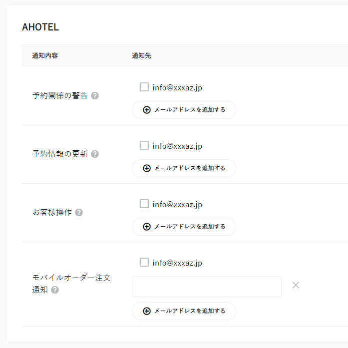
- 通知設定は、右上のアカウント名 ＞ アカウント名 ＞ 通知設定「設定する」からも開けます。そこには「全体対象」（外部サービスの警告・清掃管理）の届け先もあります（公式マニュアルより）。
- メールとは別に、PCのブラウザに出すプッシュ通知があります。右上のアイコン ＞ 端末名から、PC（ブラウザ）ごとに設定します。シークレットモードでは設定できません（公式マニュアルより、あらきホテルでは未確認）。
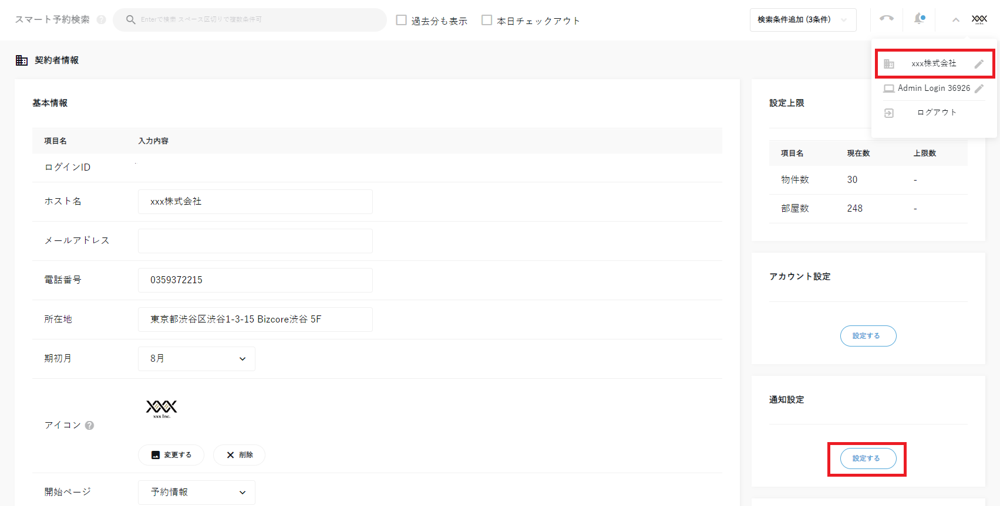
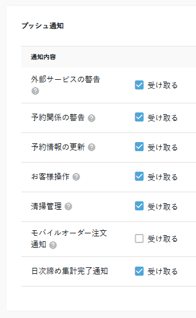
9請求書・領収書まわりの設定
物件管理 ＞ 物件情報 ＞ 詳細を見る ＞ 利用明細兼領収書・請求書 角印設定／社内共有情報／明細書設定セクション（右カラム）
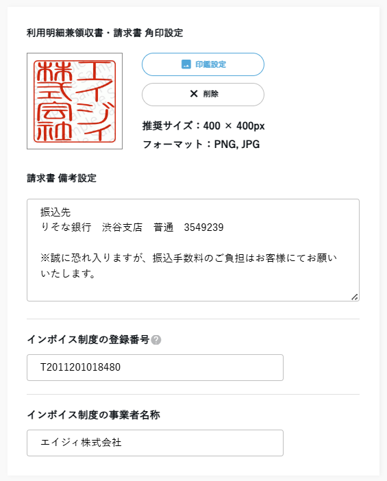
| 角印画像 | 利用明細・領収書・請求書に印字する角印を登録（推奨400×400px、PNG/JPG） |
|---|---|
| 請求書 備考設定 | 請求書に共通で載せる備考文言 |
| インボイス制度の登録番号／事業者名称 | 適格請求書（インボイス）発行に必要な情報 |
| 社内共有情報（備考・備品・ファイル保存） | スタッフ間の申し送り事項やマニュアル等のファイルを添付可能。お客様には表示されません |
| 明細書設定（プラン仕訳料金情報の統合表示） | 有効化すると、プランに紐づく料金科目の内訳を明細書上で統合して表示 |
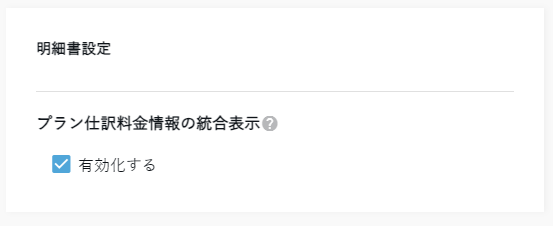
10チェックイン用タブレットを設定する
物件管理 ＞ 物件情報 ＞ 詳細を見る ＞ 「設定」内 タブレット表示設定
宿泊者が実際に触れるタブレット画面そのものを作り込む、初期設定の中でも特に項目数が多いセクションです。上から順に設定すると迷いません。
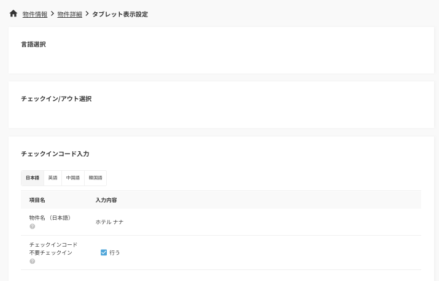
① 本人確認の方式を決める（ページ設定）
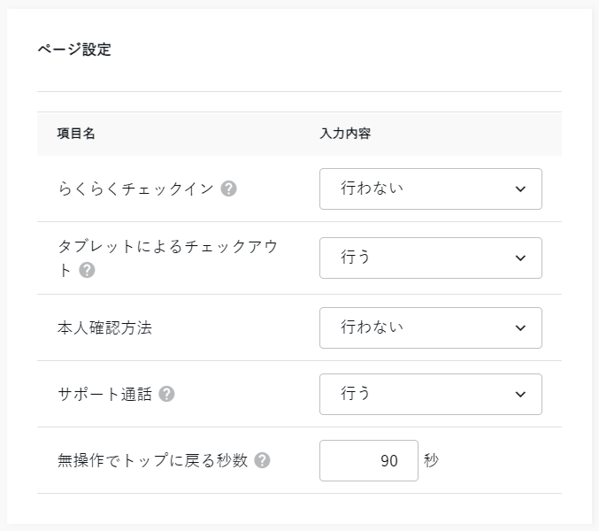
| らくらくチェックイン | 本人確認や書類入力の一部を省略し、チェックインを短時間化するモード。公式マニュアルより：「行う」にすると、①言語選択を飛ばして日本語だけになる（複数の物件を設定したタブレットでは言語選択が残る）、②チュートリアルを飛ばす、③お客様情報入力は、宿泊者全員が必須項目を入力済みのときだけ飛ばす、の3つが省かれます。日本人客が多い有人ホテル向けとされています |
|---|---|
| タブレットによるチェックアウト | タブレット上でのセルフチェックアウトを行うかどうか。公式マニュアルより：「行う」にしてもお客様にタブレット操作を強制するものではありません。「行わない」ときは、言語選択の次のチェックイン／チェックアウト選択の画面が出なくなり、チェックアウトは自動チェックアウト（シーン1）、マイページのチェックアウトボタン（シーン12）、フロントでのステータス切り替えのどれかで処理します |
| 本人確認方法 | 行わない／確認動画撮影／内部ビデオチャット、から選択。公式マニュアルでは、有料オプションのコールセンターを契約している場合は「コールセンター」も選べるとされています（あらきホテルでは未確認）。公式マニュアルより：どこまで本人確認が必要かは保健所に確かめます。顔写真の撮影で確認する場合は、ここは「行わない」を選びます。コールセンターが確認するのは氏名と、外国籍の方のパスポートが本人のものかだけで、それ以外の対応や録画はできません |
| 確認動画撮影秒数 | 「5秒×宿泊者数」または「3秒」。公式マニュアルより：「5秒×宿泊者数」は予約の人数で決まり、5名の予約なら来館した人数にかかわらず25秒撮影します。「リアルタイム確認」を「行う」にすると、スタッフが管理画面で承認するまでタブレットは待機画面になり、設定した分数を過ぎると自動でチェックイン完了へ進みます（受け方は⑥） |
| 本人確認タイミング | 例：パスポート取得後、など確認を行うタイミング。公式マニュアルでは、内部ビデオチャットを選ぶときは「パスポート取得後」にするとされています。動画撮影・ビデオチャットは、宿泊者情報の入力のあと、チェックイン完了の前に行われます |
| サポート通話 | 宿泊者がタブレットから施設へビデオ通話できる機能の有効化。公式マニュアルより：コールセンターにはつながらず、施設のスタッフが出ます。着信を受けるPCでは、ブラウザごとに右上のアイコン ＞ パソコンマーク ＞「ビデオチャット受信物件」の設定が必要です（内部ビデオチャット・動画のリアルタイム確認も同じ）。iPhone・iPadでは受けにくく、PCが推奨されています（あらきホテルでは未確認） |
| 無操作でトップに戻る秒数 | 一定時間操作がない場合に画面をリセットするまでの秒数。公式マニュアルでは、お客様の個人情報が画面に出たままにならないための設定とされています |
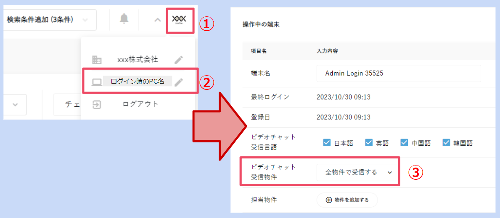
② チェックインコードまわり
| チェックインコード入力欄（4言語） | タブレット上に表示する物件名の多言語表記（公式マニュアルでは、この画面はお客様が入り方を選ぶ画面で、6桁のチェックインコード／QRコード／コード不要チェックインの3通りがあると説明されています。「物件名の多言語表記」とは合わないため、何を入れる欄か実画面で要確認） |
|---|---|
| チェックインコード不要チェックイン/チェックアウト | コード入力を省略できるようにするか。公式マニュアルより：「行う」にすると、名前か電話番号・宿泊人数・チェックアウト日の3つが一致する予約があれば先へ進めます（名前は連続する3文字が一致すれば照合）。公式は「行う」を推奨しています。照合の細かい決まり（公式マニュアルより）：名前は姓・名それぞれの頭から連続する3文字以上が合えばよく（例：Michael Jordan なら「Mic」「Jor」「Michael」）、複数の予約に当たったときは、一致した文字数がいちばん多い予約が選ばれます。宿泊人数とチェックアウト日は完全に一致する必要があります |
| チェックインコード受付期間 | チェックアウト予定時刻の何時間後まで、そのコードでの受付を許可するか |
③ チュートリアル・契約確認
| チュートリアル（ウェルカムメッセージ） | 4言語で入力可能な、宿泊者が最初に見る案内文。公式マニュアルより：自動翻訳はないので、言語ごとに文章を入れます |
|---|---|
| 契約確認・同意方法 | チェックボックス／サイン、から選択 |
| 宿泊約款・定期借家契約 | 「現地タブレットに表示する」を選ぶとチェックイン時に表示・同意取得。公式マニュアルより：約款の初期文章は一般的なひな形なので、施設の約款に差し替えます（ここで直すとマイページやメールの約款も変わります）。定期借家契約は長期滞在を賃貸の形で受ける施設向けで、通常は設定不要です |
公式マニュアルより：タブレットの言語は日本語・英語・中国語・韓国語の4つで固定で、減らせません。中国語・韓国語の文章を用意できない欄には、英語を入れておきます（あらきホテルでは未確認）。
④ お客様情報入力
氏名カナ・都道府県・国籍・職業・生年月日・性別・前泊地／行先地・旅券番号・顔写真・身分証明書・体温計・ワクチン接種証明書・陰性証明書など、多数の項目ごとに「必須」「代表者のみ」をチェックで指定できます。「＋項目を追加する」で言語・国籍セグメント別の入力パターンを追加することも可能です。施設独自の質問（カスタム質問）は、【予約管理】＞【カスタム質問】で作ります。ここでは、その質問を表示するか、必須か任意か、対象（代表者のみ／全員）を選ぶだけです（公式マニュアルより）。回答は予約詳細と、客室の状況表の「カスタム質問回答一覧」（CSVで出力可）で見られます。
- 初期値は、旅館業法に合わせて氏名・住所・国籍・連絡先（電話番号・メールアドレス）・パスポート写真を取る設定です。基本はお客様マイページと同じ項目を必須にしておきます。マイページで必須項目を入力済みのお客様は、タブレットでの入力を飛ばせます（公式マニュアルより）。
- パスポート撮影は「自動判定する」（外国籍で海外在住の人だけ撮影）が推奨です。「確認する」を選ぶと、入力の最後に内容を一覧で確認してもらえます（公式マニュアルより）。
- 必須項目がすべて入っていると、宿泊者情報の画面ごと飛ばされ、任意の項目も出ません。タブレットで必ず見せたい場合は、マイページには出さない必須項目を1つ作ります。プランや予約ごとに必須項目を変えることはできません（公式マニュアルより）。
- パスポート・顔写真は顔が写っていないと登録できません。パスポートの顔写真は2人分まで入ります。陰性証明書・ワクチン接種証明書は現地で画像を出してもらうだけで、中身はスタッフが見て判断します（公式マニュアルより）。
- Stripe・mPOSと連携しているときだけ、入力のあとに支払い画面（⑧支払い）が出ます。連携していなければこの設定欄はありません（公式マニュアルより、あらきホテルでは未確認）。
⑤ チェックイン完了・チェックアウト画面
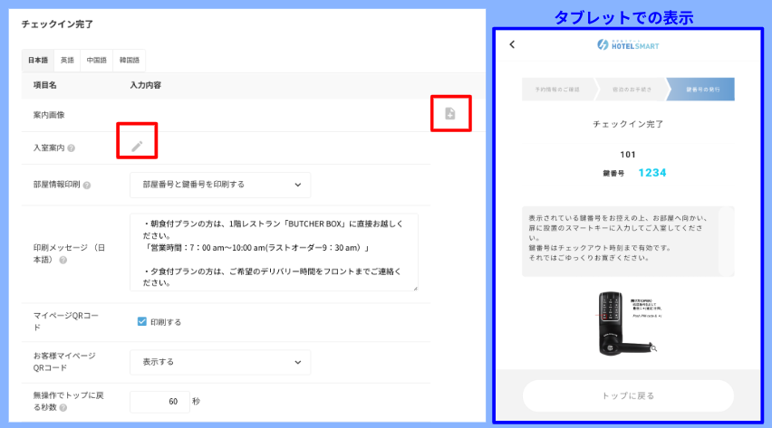
| 案内画像 | 完了画面に鍵や部屋の写真などの画像を入れられます。入れられるのは画像だけで、PDFは自動メールに添付します（公式マニュアルより） |
|---|---|
| 入室案内 | 部屋番号・鍵番号などの案内文（多言語）。公式マニュアルより：文章は部屋ごとに部屋詳細の「入室案内」で設定します（シーン2の表） |
| 部屋情報印刷 | 印刷しない／部屋番号のみ／部屋番号と鍵番号／印刷メッセージのみ、から選択 |
| お客様マイページQRコード | チェックイン完了画面にマイページへのQRコードを表示するか |
| 無操作でトップに戻る秒数（完了画面） | 最後の入室案内を表示しておく時間です。案内文が長いときは長めにします（公式マニュアルより） |
| チェックアウト時の顔写真撮影 | 撮影しない／代表者のみ／全員撮影。公式マニュアルでは、チェックアウト時の撮影はふつう不要で、保健所から求められる地域だけ設定するとされています |
公式マニュアルより：タブレットのチェックアウトでは未収金の支払い画面は出せません。精算はチェックイン時に済ませる運用が前提です（あらきホテルでは未確認）。
⑥ スタッフ側での受け方（サポート通話・ビデオチャット・確認動画）
あらきホテルではタブレットのセルフチェックインを使っています。お客様からの呼び出しや確認動画の承認は、管理画面を開いているPCで受けます。以下は公式マニュアルの説明です（あらきホテルの実際の受け方は未確認）。
- 受けるPCのブラウザで、右上のアイコン ＞ パソコンマーク ＞「ビデオチャット受信物件」を設定しておきます（①の画像）。「全物件で受信する」か、「対応物件のみを受信する」にして受ける物件を選びます。通知が来ないときはまずここを見ます。
- 呼び出しがあると、管理画面右上の受話器マークに通知が出ます（赤く光ります）。PCのスピーカーがONなら呼び出し音も鳴ります。受話器マークを押して応答し、マイクとカメラをONにします。
- 通話中は、通話画面の左上から予約情報を別画面で開けます。
- 用件が済んだら、スタッフが「次の画面に進める」を押すと通話が終わり、お客様のタブレットが次の画面へ進みます。
| サポート通話 | お客様がタブレットの右上の受話器（電話）マークから「通話スタート」を押してかけてきます。ボタンは言語を選んだ後の画面から出ます。施設スタッフが出る必要があります |
|---|---|
| 内部ビデオチャット | 本人確認として、宿泊者情報の入力後・チェックイン完了前に、お客様が「通話スタート」を押してかけてきます |
| 確認動画（リアルタイム確認） | 撮影後に通知が来るので、動画を見て「次の画面に進める」「前の画面に戻す」「トップ画面に戻す」から選びます。撮った動画はタブレットではなくクラウドに保存され、あとから予約詳細の〖宿泊者情報〗欄で見られます |
⑦ タブレット端末の設置・故障のとき
公式マニュアルより（あらきホテルの端末での手順は未確認）：
- 端末は設定済みの状態で届き、電源を入れてWi-Fiにつなぎ、縦向きに置けば使えます。Wi-Fiの設定は、アプリ画面の左上の3本線から管理用パスワード（公式マニュアルに記載）を入れて開きます。表示する内容は管理画面からいつでも変えられます。
- 電波が良く、直射日光の当たらない場所に置きます。暑すぎる・寒すぎる場所や電波の弱い場所ではバッテリーの減りが早くなります。盗難防止のワイヤーや屋外用のケースは施設で用意します。
- 「ネットワークでエラーが発生しました」と出たら、Wi-Fiのつなぎ直し、2.4GHz／5GHzの切り替え、タブレット・ルーター・モデムの再起動を試します。
- 画面がつかないときは充電を確認します。充電の状態は、管理画面右上のアイコン ＞ アカウント名 ＞〖タブレット端末〗の「設定する」＞「詳細を見る」で見られます。タッチが効かないときは、電源ボタンと音量ボタンの同時長押しで再起動し、画面の汚れや保護フィルムも確認します。
- 自然故障は、保証期間内なら1台につき1回まで無料で交換・修理されます（送る側の送料は施設負担）。落下・水濡れ・高温や直射日光の下での使用、盗難・紛失などは保証の対象外です。保証期間は申込書で確認します。
⑧ タブレットにエラーが出たときの設定側の対処
| 「チェックイン可能時間前です」 | アーリーチェックインを許可する（シーン1）か、その予約のチェックイン時刻を早めます。サイトコントローラーから入った予約は、先に自動更新を止めないと時刻が戻ります（自動更新の停止） |
|---|---|
| 「予約に部屋が割り当てられていません」 | 予約に部屋を割り当てるか、未部屋割り通過を許可します。許可した場合も最後に「フロントスタッフにお声掛けください」と出るので、無人の時間帯には向きません |
| 「チェックインコードが不正です」 | コードの打ち間違いのほか、チェックイン日が今日でない予約でも出ます |
11お客様への自動メールを設定する
物件管理 ＞ 物件情報 ＞ 詳細を見る ＞ 「設定」内 自動メール配信設定
予約から宿泊後までの各タイミングで、お客様に自動送信するメールをテンプレート単位で作り込みます。件名・本文には差し込みタグ（差し込みキーワード。例：[代表者名] [お客様マイページのURL]）が使えます。公式マニュアルでは、この画面では「差し込みタグ」と表示され、カーソルを置いた位置に入る（カーソルが無ければ本文に入る）とされています。
| お客様マイページ送信 | 自動送信設定（代表者のみ／お客様全員）と送信タイミング（予約作成時〜チェックイン180日前まで選択可）を設定。公式マニュアルより：
|
|---|---|
| お客様情報入力リマインド | マイページ未入力者への催促メール。送信期間と送信間隔（1〜10日ごと）を設定可能 |
| チェックインコード送信 | チェックインコード・鍵番号・入室案内などを送るメール。再送信設定やチェックイン用QRコードの添付可否も設定可。公式マニュアルでは、設定した日時に加えて、チェックイン前日の20時にも送られるとされています（「1日前」を設定した場合を除く） |
| チェックイン時／チェックアウト時通知 | 言語別テンプレートを用意し、領収書の自動添付可否なども設定。公式マニュアルでのタブ名は「チェックイン時送信／チェックアウト時送信」です |
| 通知アドレス | チェックイン時送信・チェックアウト時送信のタブにある欄。施設のアドレスを入れておくと、お客様がチェックイン・チェックアウトしたときにスタッフへ通知メールが届きます（公式マニュアルより、あらきホテルでは未確認） |
| BCC設定 | 各メールごとに「設定しない／ホスト／物件／ホスト＋物件」からBCC送信先を選択 |
- タブを切り替えただけでは保存されません。画面下の「変更を保存する」で、全タブの変更がまとめて保存されます（公式マニュアルより）。ctrl＋S（Macは⌘＋S）でも保存できます。タブは左から、送られる順（予約後 → チェックイン前 → チェックイン → チェックアウト）に並んでいます。
- 送信対象を「行わない」にしても、予約詳細から手で送ることはできます。同行者のメールアドレスはふつう取り込まれないので、送信対象は「代表者のみ」で足ります（公式マニュアルより）。
- 添付ファイルは1つ1MB未満・5つまでです。受け取る側の環境によっては添付が見えないことがあるので、確実に渡したい資料はPDFにしてURLを本文に書きます（公式マニュアルより）。
- 予約詳細の「送信」「再送」ボタンは、自動送信の設定に関係なく送られます。テスト予約に本物のアドレスを入れて押さないでください（公式マニュアルより）。
- 楽天トラベル・一休・Airbnb など、メールアドレスが取り込まれない予約サイトの予約には、メールは届きません（公式マニュアルより）。
12お客様マイページを設定する
物件管理 ＞ 物件情報 ＞ 詳細を見る ＞ 「設定」内 お客様マイページ設定
宿泊前後にお客様がWebブラウザから確認できる専用ページの、入力項目と表示内容を設定します。マイページは予約ごとに作られ、あらきホテルでは自動メール（シーン11）でURLを送って使っています（SMS・LINEでは送りません）。
| お客様情報 入力項目 | 氏名・氏名カナ・国籍・生年月日・旅券番号・顔写真・身分証明書など、言語／国籍セグメントごとに必須・代表者のみを設定。公式マニュアルより：
|
|---|---|
| お客様情報入力（カスタム質問） | 施設独自の質問を表示する設定。公式マニュアルでは、質問そのものは【予約管理】＞【カスタム質問】で作り、ここでは表示するか・必須か任意か・対象（代表者のみ／全員）を選ぶとされています。回答は予約詳細と、客室の状況表の「カスタム質問回答一覧」で見られます |
| 領収書発行 | マイページでの領収書発行リクエスト表示、ダウンロード許可の有無。公式マニュアルより：お客様が「必要」と答えると宛名の入力欄が出ます。発行方法の希望やその他の要望も聞けます。マイページからのダウンロードは、チェックアウトした後に使えるようになります |
| 宿泊約款・施設情報・予約情報・チェックアウトボタン | マイページ上にそれぞれ表示するかどうかを個別に選択。公式マニュアルでは、約款の文章はここではなく、タブレット表示設定の「契約確認」で編集するとされています（マイページにも同じ文章が出ます）。そのほか公式マニュアルより：
|
| 常時チェックインコード発行 | 許可すると、チェックイン日以前でもマイページからコードを確認可能 |
| チェックイン後のゲスト情報更新 | チェックイン完了後に宿泊者自身が情報を編集できるかどうか |
| 挨拶メッセージ | マイページ上部に表示する多言語の歓迎文 |
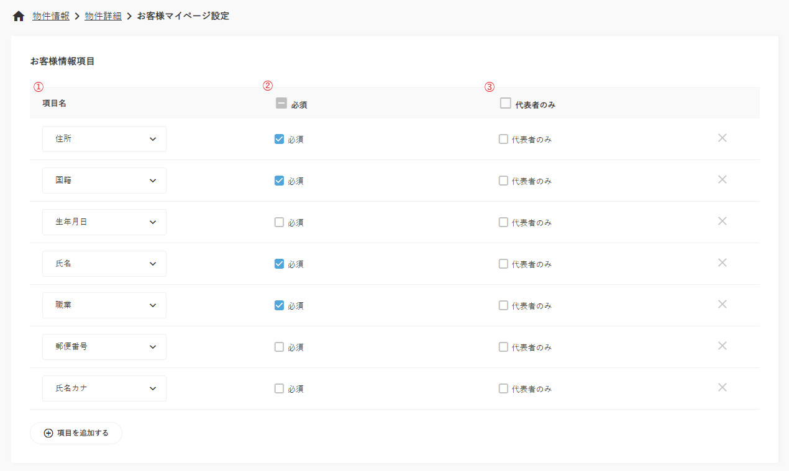
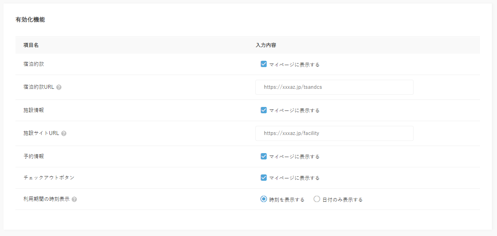
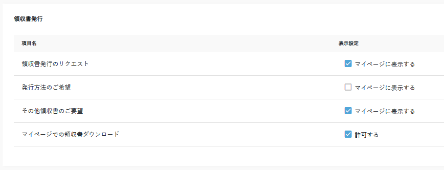
13自動部屋割りを設定する
物件管理 ＞ 物件情報 ＞ 詳細を見る ＞ 「設定」内 自動部屋割り設定
| 自動部屋割り | 「行わない」～「チェックイン90日前の予約まで実行」の範囲で、どのタイミングの予約まで自動で部屋を割り当てるかを選択 |
|---|---|
| ローテーション部屋割り | 行う／行わない。同じ部屋タイプの中でも稼働を均等に回したい場合に使用 |
| 部屋割り優先順位 | 部屋番号ごとに優先順位を指定可能（一覧に部屋が登録されていると設定できます） |

14精算画面の支払い方法を選ぶ
物件管理 ＞ 物件情報 ＞ 詳細を見る ＞ 「設定」内 支払い方法設定
精算画面に並ぶ支払い方法の選択肢を、実際に使うものだけに絞り込みます。カテゴリーは「売掛無し」「予約経路」「決済代行サービス」「クレジットカード」「電子マネー」「ID決済」「売掛」「行政補助金」「前受」「アクワイアラー」「その他」の11カテゴリー、数十種類の決済手段が用意されています。
- 「支払/入金日の初期値」を、現在日付／日次締め日付のどちらにするか選びます。
- 実際に施設で使う支払い方法だけ「表示する」に、使わないものは「表示しない」に切り替えます（現金・銀行振込・各種クレジットカード・電子マネー・QRコード決済・売掛精算・前受精算など）。
- 「変更を保存する」で確定します。
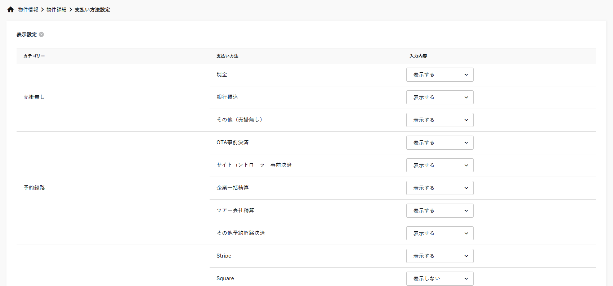
公式マニュアルでは、表示／非表示が効くのは予約の精算情報登録と予約外の精算登録の画面だけで、PCA会計の設定・予約CSV・精算情報CSVには「表示しない」にした支払い方法も出続けるとされています。
15共通マスタ・税設定を確認する
画面左下の 設定 ＞ マスターデータ設定／入湯税・宿泊税設定
料金科目や税の計算に関わる全施設共通の設定です。日常のフロント操作では変更せず、運用開始時または制度変更時に管理者が確認します。
マスターデータ設定
- 「マスターデータ設定」を開き、料金登録で使用する料金科目が登録済みか確認します。
- 料金科目の名称や画面に表示される設定が、現在の会計ルールと一致しているか確認します。
- 既存項目と同じ用途の項目を重複して作らず、不明な項目は変更前に責任者またはHOTEL SMARTへ確認します。
- 「予約経路」の「編集する」で、電話・直接予約など、サイトコントローラーを通らない予約の経路を追加し、カテゴリー（直接予約／国内OTA／旅行代理店／国外OTA／企業・団体等／その他）を選んで保存します。サイトコントローラーから入る経路は自動で追加されるので、あとでカテゴリーだけ選びます。ここの経路が、手で予約を作るときの「予約経路」の選択肢になります（公式マニュアルより、マスターデータ設定の画面はあらきホテルでは未確認）。あらきホテルで手で予約を作るときの「予約経路」の選択肢は、今は「電話予約」「自社HP」「その他」です（2026/10/05確認）。
- テスト予約で料金明細・領収書への表示を確認してから本運用に使用します。
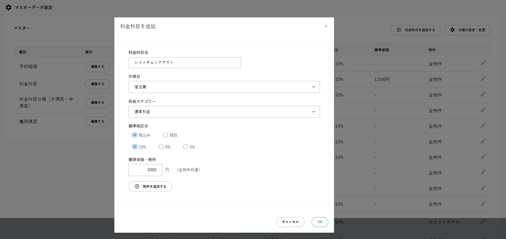
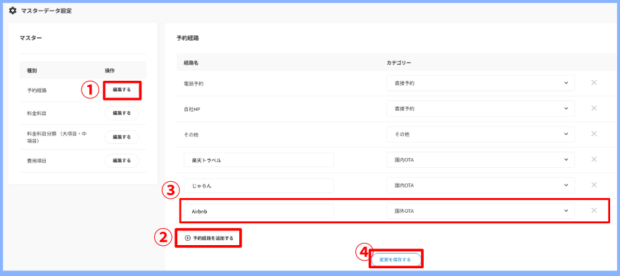
- サイトコントローラーとつないでいるときは、「宿泊費」「ポイント利用」の2つの科目名を変えません。取り込みのたびにこの名前で使われるため、変えても次の取り込みで同じ名前の科目がまた作られます。
- 名前を変えると、予約詳細の料金や予約CSVなど、過去の料金まで新しい名前で表示される画面があります。一方、収支実績報告書・オンハンドレポート・発行済みの請求書は古い名前のまま残ります（金額は変わりません）。
- 一度でも料金で使った科目は削除できません。
- 過去の分まで新しい名前になるのは、ほかに会計ジャーナル・料金精算の更新情報CSV・稼働出力・これから発行する請求書や利用明細などです。同じ期間を収支実績報告書と会計ジャーナルで出すと名前がそろわないことがあるので、名前を変えるなら期の切れ目が無難です。元の名前は残らないので、戻すときは手で入れ直します。
| 大項目・中項目 | 【設定】＞【マスターデータ設定】＞「料金科目分類（大項目・中項目）」の「編集する」で作ります。帳票の表示や、収支実績報告書の大項目別・中項目別の集計に使われます。大項目のカテゴリーが「宿泊費」の科目は平均客室単価の集計対象になり、「食費」の科目は食事項目の計上先に選べます |
|---|---|
| サイトコントローラーとつなぐとき | 予約の売上は「宿泊費」、ポイント・クーポンは「ポイント利用」として自動で取り込まれるので、科目を新しく作る必要はありません。ただし、この2つにも中項目（大項目）のひも付けは必要です。取り込んだ宿泊費を内訳に分けたいときや、予約後の追加料金用の科目は追加します |
| 料金カテゴリー（6種類） | 通常料金／オプション購入（追加で買う商品）／調整金／ポイント利用／税（入湯税・宿泊税など消費税以外の税）／不計上。「ポイント利用」の金額は通常料金から差し引かれ、その分は予約経路への売掛になります。「不計上」にした科目は集計に入りません |
| 標準税区分・標準単価 | 料金を登録するときに自動で入る税区分と単価です。税区分の初期値は税込10%。単価は値段が変わらない商品に入れておくと便利です |
| 物件 | 物件を指定すると、その物件だけで使える科目になります。空欄なら全物件で使えます |
| 並び順 | 料金登録の科目の選択欄には、カテゴリーごとに設定画面の順で並びます。科目の左の移動ボタンをドラッグして並べ替えられます |
入湯税・宿泊税設定
- 「入湯税・宿泊税設定」を開き、対象物件・税の種類・適用条件・金額・適用期間を確認します。公式マニュアルでは、「＋新規作成」で税種別・物件・設定開始日（課税を始める宿泊日。当日より前は選べません）・課税対象の金額・課税対象単位を入れ、宿泊者区分（大人／子供A〜D）ごとに、課税するか・課税の方法（金額に応じて／一定の金額／一定の割合）・金額（税抜）を設定するとされています。
- 自治体の最新制度、課税／免税条件、開始日を責任者または会計担当と照合します。
- 制度変更時は適用開始日前の予約を含めた計算結果をテストし、承認を受けてから運用を開始します。
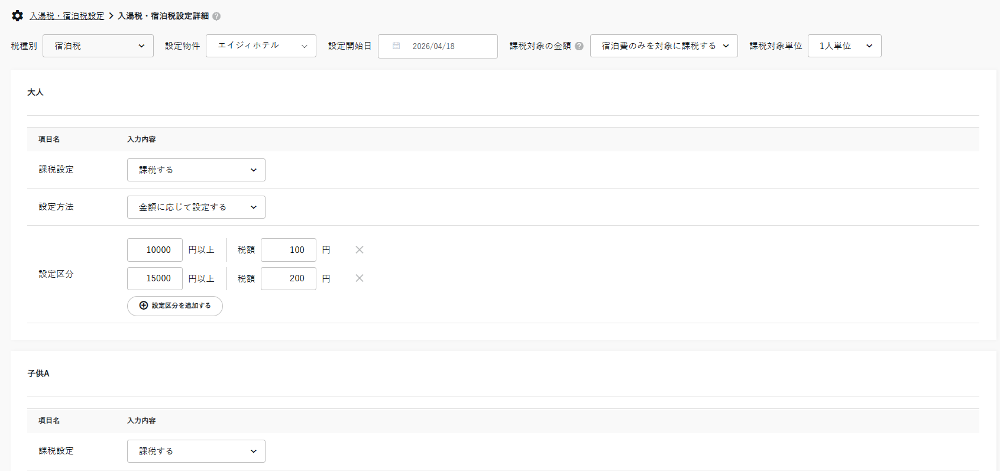
- 自動で課税されるのは、サイトコントローラー・ブッキングエンジンから取り込んだ予約です。設定より前に取り込んだ予約には、その予約が更新されるまで課税されません。
- 税を手で入れるときは、料金カテゴリーが「税」の料金科目を使います。それ以外の科目だと入湯税・宿泊税の月計表に出ません。予約外の料金も集計されません。
- 課税の方法は3通りです。宿泊料金の段階ごとに税額を決める「金額に応じて」、1人1泊いくらの「一定の金額」、料金の何%かの「一定の割合」。子供を課税しないときは、その区分を「課税しない」にします。
- 日帰り（宿泊を伴わない）客の入湯税は、税種別「入湯税（デイユース）」で別に設定します。
- 税率が変わるときは、改定日を設定開始日にした設定を追加します。古い設定と二重に課税されることはありません。設定開始日は当日より前にはできません。
- 集計は【分析帳票】＞「入湯税・宿泊税_月計表」で見られ、画面右上の「入湯税/宿泊税集計を印刷する」から印刷できます。
前受金を使う設定（法人・団体）
法人・団体管理 ＞ 法人・団体一覧 ＞ 法人・団体詳細
団体や法人から宿泊代を先に受け取るとき（前受金）に、入金・取り崩し・残高を法人・団体ごとに管理する機能です。以下は公式マニュアルの説明です（あらきホテルでは未確認）。
- 法人・団体詳細の「法人・団体情報の編集」で、［前受金設定］を「行う」にして保存します。同じ相手でも入金口座が違う前受金は、別の法人・団体として登録して分けます。
- 入金を受けたら、法人・団体詳細の〖前受金管理〗で「前受金情報作成」を押して登録します。
- 取り崩しは、その法人・団体を付けた予約の精算画面で行います（精算の手順）。予約外の精算でも、新規作成の時点で法人・団体を付ければ取り崩せます。取り崩しが報告書や残高に出るのは、取崩日の日次締めの集計が終わった後です。
- 入金と取り崩しは【売上管理】＞「前受金報告書」（または法人・団体詳細の前受金報告書）で、法人・団体・物件・期間を指定して確認します。残高が足りない法人・団体は日次締め画面に出ます。期間中の前受金の入金額は収支実績報告書でも見られます。
「設定」にあるその他の管理画面
| 宿泊予約サイト手数料設定 | 予約経路ごとの手数料を扱う設定。契約書と照合して管理者が設定 |
|---|---|
| 売掛先設定 | 法人・旅行会社などの請求先を扱う設定。経理ルール確定後に登録 |
| 会計システム連携設定 | 外部会計サービスとの連携設定。契約・連携仕様の確認が必要 |
| 目標売上設定 | 分析用の目標値を登録する設定。日常の予約・精算処理には使用しない |
16外部サービス連携を確認する
サイドバー下部の オプション機能
外部サービスや機器をHOTEL SMARTと連携するための管理画面です。通常のフロント業務では操作しません。
| NCR連携 | 連携申込を行う入口。利用契約と対象業務を確認してから申請 |
|---|---|
| Windowsアプリ | 「HotelSmart 機器接続」をMicrosoft Storeまたはインストーラーから導入する入口。導入端末と管理者権限を確認 |
| 外部公開API | 外部システムとのAPI連携申込。接続先、扱うデータ、保守担当を決めてから申請 |
| 新規対応リクエスト | サービス名、カテゴリー、ご担当者名、メールアドレス、希望理由を送るフォーム |
サイトコントローラー：TLリンカーン（2way連携）
あらきホテルのサイトコントローラーはTLリンカーンで、2wayでつないでいます。2wayでは、TLリンカーンからの予約の取り込み（1way）に加えて、HOTEL SMARTで作った予約やブロックで減った在庫がTLリンカーンへ送り返されます。そのため在庫（売り出す部屋数）はHOTEL SMARTの販売在庫で管理し、TLリンカーンの管理画面で残室数を直接変えません。以下の仕組み・設定は公式マニュアルの説明です（あらきホテルの設定画面は未確認）。
- TLリンカーンへ送る在庫は「部屋数 − 予約数 − ブロック数 ＋ 調整数」で計算され、変わった分が自動で送られます。反映には最長15分ほどかかります。
- 予約の追加・変更・キャンセル、ブロックの設定、調整数の変更をすると、そのたびに在庫が送られます。日程変更のあとにTLリンカーン側の在庫を手で直す必要はありません。
- TLリンカーンで残室数を手で変えても、次の送信でHOTEL SMARTの数に上書きされます。TLリンカーン側で「照会のみ」になっている枠には在庫を送れません。
- TLリンカーンの在庫は「ネット販売」と「旅行会社」の2系統に分かれています。ネット販売は「ネット室タイプグループ」単位で、同じグループの販売サイトは残室を共有します（サイトごとに在庫を分けることはできません）。旅行会社は「販売先コード × 旅行会社室タイプ × 枠」ごとに管理されます。旅行会社ごとに部屋を確保したいときはアロット連携という別の機能を使います。
- 【TL-リンカーン連携】画面でユーザーID・パスワードを登録して1way連携を始め、右側の〖アカウント情報〗で「部屋タイプマスター取得」「予約情報取得」を行います。
- 下の「販売在庫」の設定（販売部屋タイプ・販売在庫カレンダー）を済ませます。
- 【TL-リンカーン連携】＞「詳細を見る」＞【アカウント設定】の〖アカウント情報〗で、［販売在庫連携］の「開始」を押します（ボタンが無いときはサポートに利用設定を依頼）。販売在庫カレンダーで作った期間の在庫が、当日から最長で翌年の同じ月の末まで連動します。
- 同じ画面の〖在庫連携設定（ネット販売）〗でネット室タイプグループごとに、〖在庫連携設定（旅行会社）〗で販売先コード（枠）ごとに、［割当て先販売在庫］を選んで「変更を保存する」を押します。販売中の部屋タイプに割り当て先が無いと、在庫が正しく送られません。
販売在庫（販売部屋タイプ・販売在庫カレンダー）
販売管理 ＞ 販売部屋タイプ／販売在庫 ＞ 販売在庫カレンダー
2way連携でサイトコントローラーへ知らせる在庫数を管理する画面です。以下は公式マニュアルの説明です（あらきホテルの設定内容は未確認）。
- 【販売部屋タイプ】で物件を選び、「項目を追加する」から販売部屋タイプ名・調整数の初期値・ひも付ける部屋タイプを入れて保存します。名前と並び順はTLリンカーン側に合わせると分かりやすくなります。部屋タイプを複数ひも付けると、上の部屋タイプから先に在庫が使われます。
- 【販売在庫カレンダー】で物件と期間を選び「在庫数を表示する」を押します。初めは「販売在庫が作成されていない期間があります」と出るので、「指定期間の販売在庫を作成」を押します。在庫を作っていない日は販売できないので、予約を受け付ける先の日付まで作っておき、その後も定期的に作り足します。
- 在庫数を押すと内訳が開き、調整数の変更や手仕舞い（販売停止）ができます。手仕舞いを使うにはサポートへの申し込みが必要です。期間内の調整数は「調整数一括変換」でまとめて変えられます。
| 販売在庫数 | 残室数 ＋ 調整数。マイナスになったときは0としてサイトコントローラーへ送られます |
|---|---|
| 残室数 | 全部屋数 − 予約数 − ブロック数 |
| 調整数 | 実際の部屋数と、売りたい数との差。全部売るなら0、少なく売るならマイナス、多く売るならプラスにします |
| 送られるタイミング | HOTEL SMARTで在庫数が変わったときと、サイトコントローラーなどから予約を取り込んだとき |
| カレンダーの表示 | 手仕舞いの日はグレー、在庫を作っていない日は警告マークが出ます |
17プランとプラン料金を設定する
プラン設定 ＞ プラン情報／プランコード設定／料金自動仕訳設定、販売管理 ＞ 料金ランク・料金グループ・料金カレンダー
予約に付くプラン名・特典・食事を見分けたり、電話予約でプランの料金を自動で入れたりするための設定です。使わなければ設定しなくても予約の作成・取り込みはできます。以下は公式マニュアルの説明です（あらきホテルのプラン設定の状況は未確認）。
プランを作る
- 【プラン設定】＞【プラン情報】で「新規プラン作成」を押し、物件を選びます。
- プラン名（必須）を入れ、必要に応じて表示名（短い呼び名）、プラン説明（管理用でお客様には出ない）、特典メモ（予約詳細に表示される）を入れます。
- 食事が付くプランは、食事区分にチェックを入れて食事項目を選びます（あらきホテルは現在食事提供なし。シーン4）。
- 販売する部屋タイプと料金グループ（一度保存してから選べる）、宿泊日数の下限・上限、チェックイン・アウト時刻、参加形態を設定します。宿泊日数とイン・アウト時刻は手で予約を作るときだけ使われ、時刻は物件の設定より優先されます。
- 右上の「保存する」を押します。複数物件があれば、ほかの物件のプランをコピーして作れます。
- 作ったプランは削除できず、表示順も作った順のままです。PMSのプラン名は予約サイトと同じでなくてかまいません。
プランコードをひも付ける
予約サイトや旅行会社のプランには「プランコード」という英数字が付いていて、サイトコントローラー経由で予約と一緒に届きます。HOTEL SMARTのプランにこのコードをひも付けておくと、届いた予約にプランが付きます。1つのプランに複数のコードをひも付けられるので、サイトごとにプラン名が違っても1つにまとめられます。
- 【プラン設定】＞【プランコード設定】で物件とプランを選びます。
- プランコードと、サイトコントローラー（予約サイト）でのプラン名を入れて保存します。コードは1文字でも違うとひも付かないので、コピーして貼り付けます。プラン名は多少違っても動きますが、そのままコピーすると見分けやすくなります。
プラン料金と料金自動仕訳
サイトコントローラーから入る予約は料金も一緒に取り込まれるので、この設定は要りません。電話・飛び込みなど手で作る予約でプランを選んだときに、料金を自動計算させたい場合に設定します。
- 料金ランク：繁忙期・通常期・閑散期、休前日とそれ以外など、日ごとの価格帯の区分を作ります。料金が一律でも、自動計算させるならランクが1つ必要です。
- 料金グループ：プラン × 部屋タイプなどの単位で、ランクごとの料金をまとめます。
- 料金カレンダー：各日にどのランクを当てるかを決めます。
- プランへの適用：プランの部屋タイプ設定で料金グループを選びます。
料金自動仕訳設定（【プラン設定】＞【料金自動仕訳設定】）を使うと、宿泊料金の一部を別の料金科目に自動で分けられます（例：QUOカード付きプランの1,000円をQUOカードの科目へ）。料金科目・税込単価・人数単位か部屋単位か・1泊ごとか1回かを設定します。大人と子供で分けることはできません。食事代の仕訳はプランの食事設定で行うので、ここでは設定しません。
18スタッフのアカウントとログイン
画面右上のアイコン ＞ アカウント名 ＞ アカウント設定「設定する」
スタッフごとのログインアカウント（子アカウント）を作り、使える物件・メニュー・操作を絞る設定です。管理者（親アカウント）だけが行えます。以下は公式マニュアルの説明です（あらきホテルのアカウントの作り方は未確認。役割分担は操作する人の目安）。
子アカウントを作る
- 右上のアイコン ＞ アカウント名 ＞〖アカウント設定〗の「設定する」を開き、〖アカウント一覧〗の「アカウント作成」を押します。
- 登録方法を選びます。メールアドレスで登録：本人がメールで届くリンクからパスワードを決めます。ログインIDで登録：メールアドレスの無いフロントスタッフ向けで、管理者がID（4〜64文字）とパスワード（8文字以上）を決めます。実際のログインIDは、入れたIDの後ろに「#識別ID」が付いたものになります。
- 担当物件を選び、表示するメニューと操作の権限にチェックを入れます。役職ごとの権限をまとめた「権限グループ」を選ぶと一度に付けられます。権限グループは、アカウント一覧の右上「権限グループ一覧」で作ります。
- メールアドレス登録のときは「設定メールを送信する」を押します。リンクの有効期限は送ってから1日です。
| パスワードを変える | メールアドレス登録の人は、管理者から再設定メールを送るか、本人が右上のアイコン ＞ アカウント名 ＞「再設定メールを送信する」で変えます。ログインIDの人のパスワードは、管理者しか変えられません |
|---|---|
| アカウント名 | 右上のアイコンを押し、1行目から開く〖アカウント設定〗で名前を入れて保存します |
| 削除する | 権限設定で「選択クリア」を押してすべてのチェックを外し、保存すると削除されます。ログインIDで作ったアカウントは、消すと同じIDで作り直せません |
| 「403 アクセス権限のないページです」 | そのアカウントのログイン直後に開くページ（開始ページ）の権限が付いていません。管理者が開始ページを変えるか（【契約者情報】の〖基本情報〗）、その画面の権限を付けます |
| できないこと | 権限のコピー、権限の一覧の書き出し・取り込みはできません |
ログインの安全対策
- パスワードの入れ間違いに注意：短い時間にログインを何度も失敗すると、その接続元（店のネットワーク）が自動で一時的に締め出され、正しいパスワードでも入れなくなります。しばらく時間を置き、急ぐときはサポートに解除を頼みます（公式マニュアルより）。
- パスキー：指紋・顔認証やセキュリティキーで本人確認を上乗せする仕組みです。管理者が［認証器設定］で「無効／有効／必須／承認必須」から方針を選びます。「有効」でも、一度登録した人はそれ以降ログインのたびに本人確認が必要です。パスキーは端末ごとなので、別のPCでは登録し直します。紛失に備えて複数登録しておくことがすすめられています。指紋や顔の情報はサーバーに送られません（公式マニュアルより、あらきホテルでは未確認）。
- 接続元の制限：海外や場所を判定できない接続元からログインすると、管理画面のお知らせに警告が出て記録されます。パスキーを登録している人には追加の本人確認が求められます。IPアドレスや国での許可・拒否の設定はサポートに頼みます（公式マニュアルより、あらきホテルでは未確認）。
- 会社の認証基盤（SAML）を使うシングルサインオン（SSO）もありますが、あらきホテルでの利用は未確認です。
19他社システムから切り替えるとき
前のシステムからHOTEL SMARTへ切り替える日（切替日）に向けた、公式マニュアルの推奨手順の要点です。あらきホテルの実際の切り替え手順は未確認なので、責任者の計画に従ってください。
| 切替日より前にチェックアウトする予約 | 前のシステムで処理し、HOTEL SMARTには入れません |
|---|---|
| 切替日以降にチェックインする予約 | HOTEL SMARTに入れます。サイトコントローラー経由の予約は、サイトコントローラー側で切替日以降チェックイン分を出し直して取り込みます。電話予約などサイトコントローラーを通らない予約は手で入力します |
| 切替日をまたぐ連泊 | 切替日をチェックイン日として、HOTEL SMARTに手で入力します |
- 過去の予約はHOTEL SMARTへ移さず、前のシステムで見ます。準備期間中に入った新しい予約も、切替日より前の滞在は前のシステム、以降の滞在はHOTEL SMARTに入れます。
- 売掛金・前受金の残高は、切替日の日次締めまでにHOTEL SMARTへ移します。
- 楽天トラベル・じゃらんなどで事前決済された予約で、切替日をまたぐものを手入力するときは、前のシステムと売掛が二重にならないよう確認します。
- 切り替え直前に日ごと・部屋タイプごとの残室数を控えておき、取り込み後にHOTEL SMARTの残室と、サイトコントローラー（TLリンカーン）の在庫が合っているかを確認します（販売在庫）。